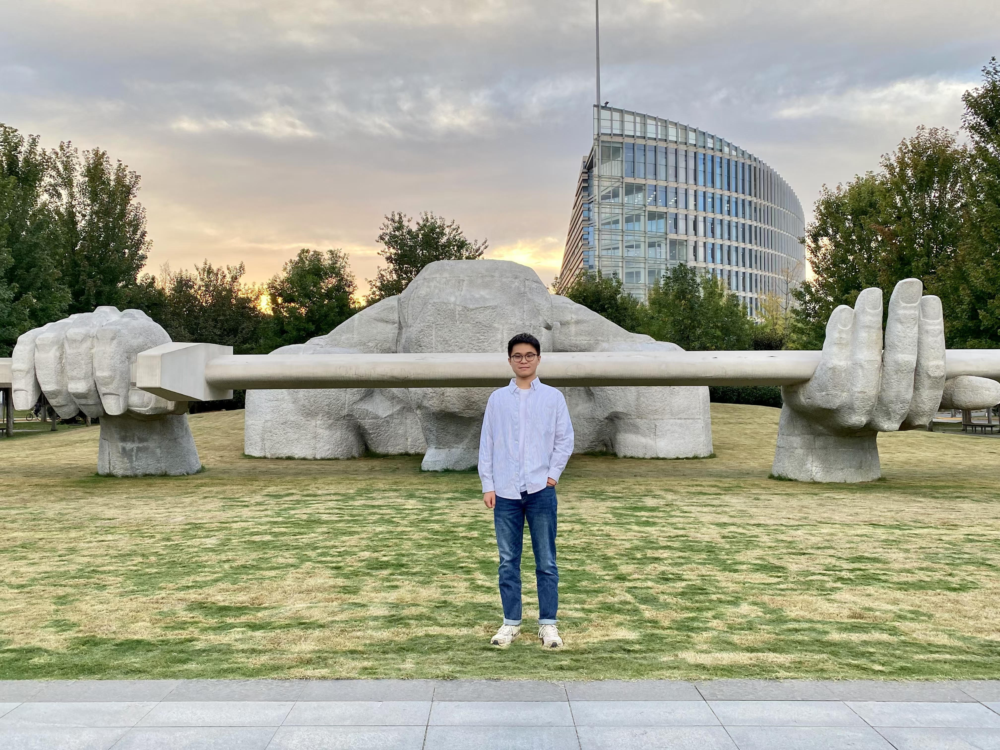
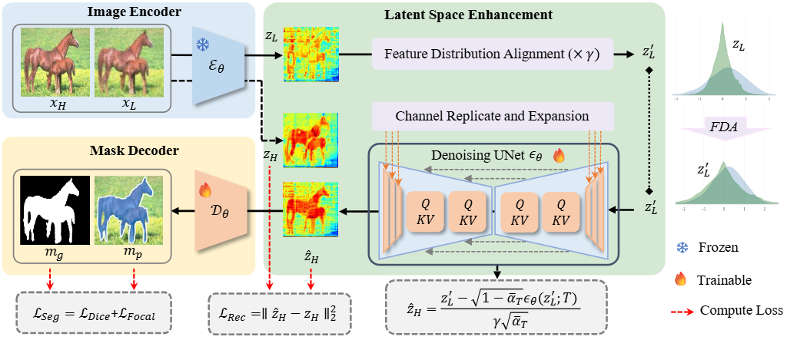
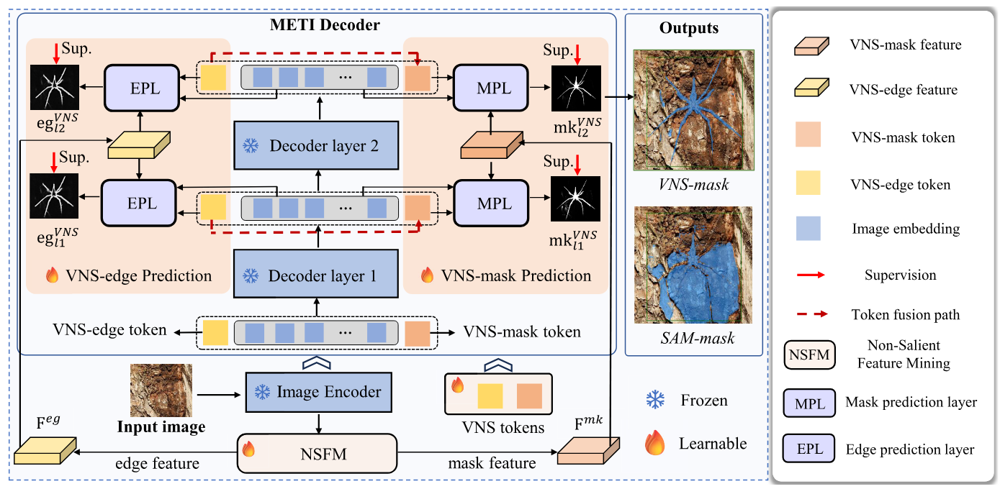
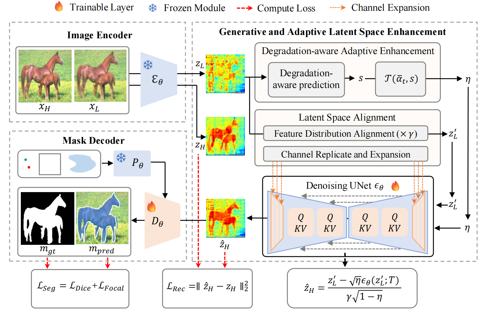
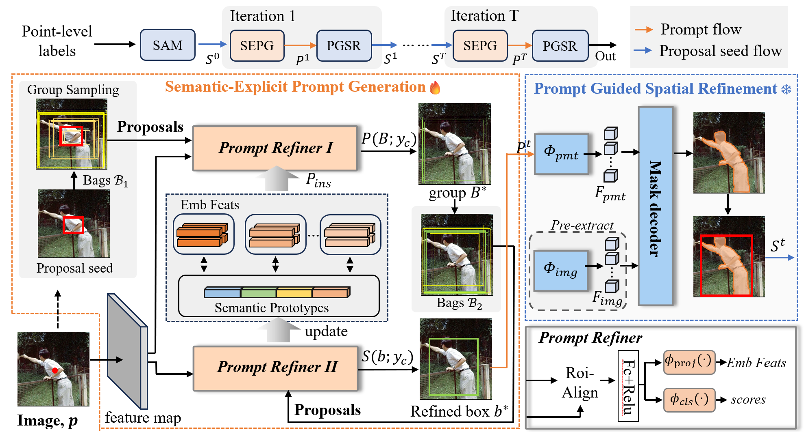
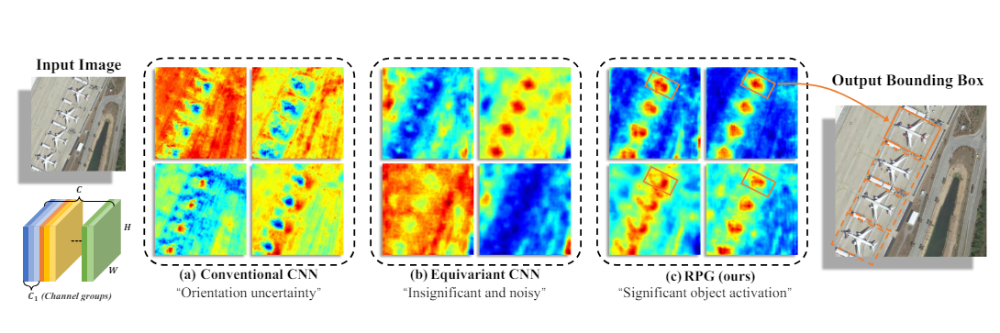
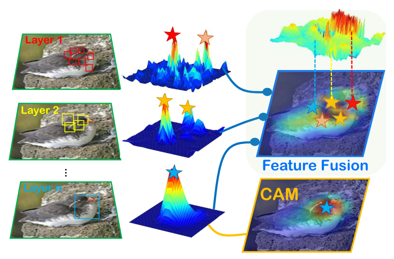
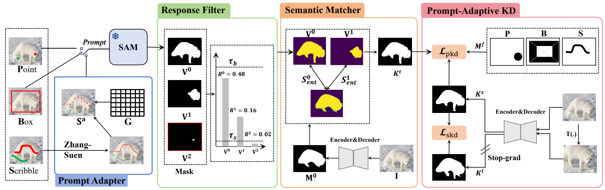
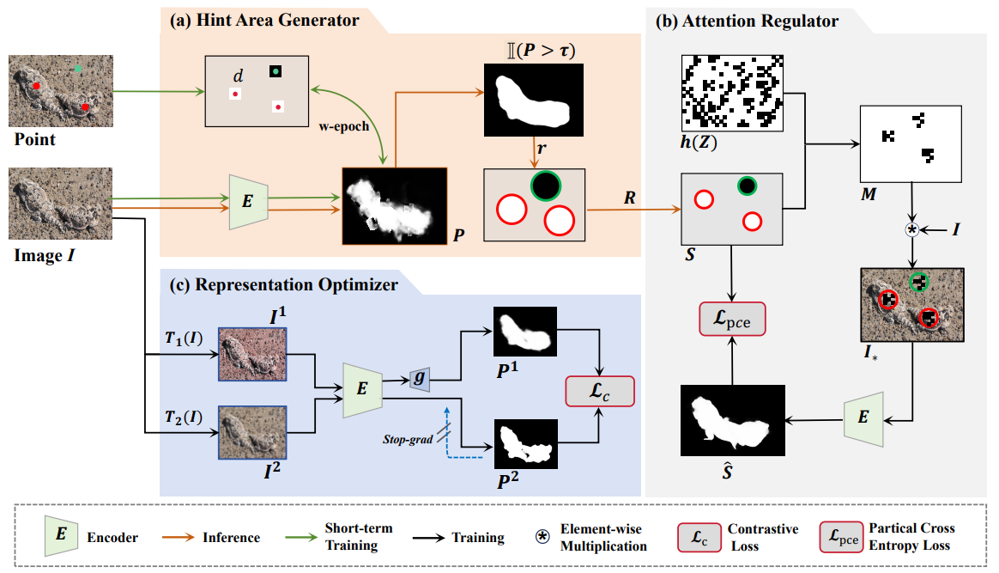

About Me
I am currently a Ph.D. student at the School of Artificial Intelligence, Northwestern Polytechnical University (NWPU), Xi'an, China, from 2023. Before that, I received my B.S. from Shaanxi University of Science and Technology, Xi'an, China, in 2021. I am advised by Prof. Shan Gao and have been fortunate to have had the opportunity to intern at Huawei, vivo, and ByteDance, where I gained valuable experience in both academia and industry.
My research primarily focuses on developing robust and data-efficient visual foundation models and multimodal large language models for visual perception, understanding, and generation. More recently, I have been working on two closely related directions:
1. Robust visual foundation models: improving robustness and generalization for challenging scenarios such as degraded visual inputs, non-salient targets, and remote sensing images.
2. Multimodal large language models and vision-language agents: advancing image understanding and generation, with a particular interest in diffusion-based UMM and VLM agents.
Internships
ByteDance
Worked on unified multimodal understanding-generation modeling based on discrete diffusion models for parallel output.
vivo Camera Team
Worked on a vision-language-model-based PhotoAgent for photo editing, tool-use planning, and multimodal agent evaluation.
Huawei
Worked on robust segmentation foundation models for degraded visual inputs via generative latent-space enhancement.
Recent News
- 12/2025: One first-author journal paper, VNS-SAM, was accepted by IEEE Transactions on Image Processing.
- 10/2025: HANet was selected as an ESI Highly Cited Paper.
- 06/2025: I attended VALSE 2025 in Zhuhai and gave a poster presentation.
- 02/2025: My first-author paper GleSAM was accepted by CVPR 2025.
- 12/2024: SAM-COD+ was accepted by IEEE Transactions on Circuits and Systems for Video Technology.
- 07/2024: Two papers, SAM-COD and P-COD, were accepted by ECCV 2024.
- 04/2024: My first-author paper P2P was accepted by IJCAI 2024.
- 02/2024 I have one journal paper (co-first author) accepted by TGRS (中科院 Q1, IF=8.2).
- 05/2023 I have one journal paper (HANet) (first author) accepted by TCSVT (中科院 Q1, IF=11.1).
- 01/2023 I have one journal paper accepted by TNNLS (中科院 Q1, CCF-B, IF=10.4).
Publications
 |
Guangqian Guo, Yong Guo, Xuehui Yu, Wenbo Li, Yaoxing Wang, Shan Gao
Segment Any-Quality Images with Generative Latent Space Enhancement IEEE Computer Vision and Pattern Recognition Conference (CVPR), 2025 [Paper] [Code] |
 |
Guangqian Guo, Pengfei Chen, Yong Guo, Huafeng Chen, Boqiang Zahng, Shan Gao
Boosting Segment Anything Model to Generalize Visually Non-Salient Scenarios IEEE Transactions on Image Processing (TIP), 2025 [Paper] [Code] |
 |
Guangqian Guo, Aixi Ren, Yong Guo, Xuehui Yu, Jiacheng Tian, Wenli Li, Yaoxing Wang, Shan Gao
Towards Any-Quality Image Segmentation via Generative and Adaptive Latent Space Enhancement International Journal of Computer Vision (IJCV), major revision. [Paper] [Code] |
 |
Guangqian Guo, Dian Shao, Chenguang Zhu, Sha Meng, Xuan Wang, Shan Gao
P2P: Transforming from Point Supervision to Explicit Visual Prompt for Object Detection and Segmentation International Joint Conference on Artificial Intelligence (IJCAI), 2024 [Paper] [Code] |
 |
Guangqian Guo, Pengfei Chen, Xuehui Yu, Zhenjun Han, Qixiang Ye, Shan Gao
HANet: Save the Tiny, Save the All: Hierarchical Activation Network for Tiny Object Detection IEEE Transactions on Circuits and Systems for Video Technology (TCSVT), 2023 [Paper] [Code] |
 |
*Chaowei Wang, *Guangqian Guo, Chang Liu, Dian Shao, Shan Gao
Effective Rotate: Learning Rotation-Robust Prototype for Aerial Object Detection * co-first author IEEE Transactions on Geoscience and Remote Sensing (TGRS), 2024 [Paper] |
 |
Shan Gao (Ph.D. advisor), *Guangqian Guo, Hanqiao Huang, C. L. Philip Chen
Go Deep or Broad? Exploit Hybrid Network Architecture for Weakly Supervised Object Classification and Localization * student first author IEEE Transactions on Neural Networks and Learning Systems (TNNLS), 2023 [Paper] |
 |
Huafeng Chen, Pengxu Wei, Guangqian Guo, Shan Gao
SAM-COD: SAM-guided Unified Framework for Weakly-Supervised Camouflaged Object Detection European Conference on Computer Vision (ECCV), 2024 [Paper] |
 |
Huafeng Chen, Dian Shao, Guangqian Guo, Shan Gao
Just a Hint: Point-Supervised Camouflaged Object Detection European Conference on Computer Vision (ECCV), 2024 [Paper] |